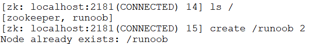
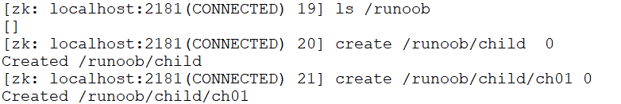
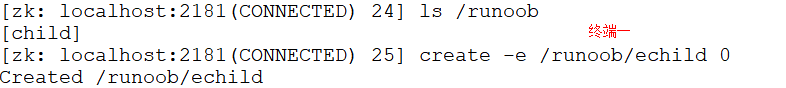
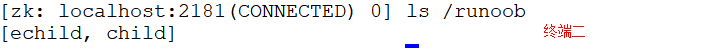
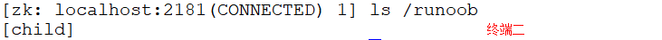
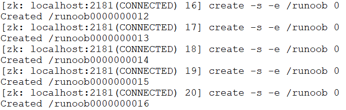
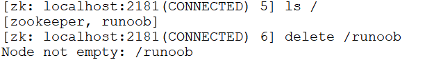

この章では、ZooKeeper のノード特性と簡単な使用シーンを紹介します。これらのノード特性が存在するからこそ、ZooKeeper はさまざまなシーンのアプリケーションを開発できるのです。
1、同じレベルのノードのキー名は一意である
例：
$ ls / $ create /サンプル 2

既に存在している/サンプルノードが存在する場合、再度作成すると「既に存在します」と表示されます。
2、ノード作成時には、必ずフルパスを含める必要がある
例：
$ ls /サンプル $ create /サンプル/child 0 $ create /サンプル/child/ch01 0

3、セッションが閉じられると、一時ノードは削除される
例：
$ ls /サンプル $ create -e /サンプル/echild 0

同時に端末2でこのノードを確認します：
$ ls /サンプル

ctrl+c端末1の接続を閉じた後、端末2で確認します/サンプル/echildノードが消えます。
$ ls /サンプル

4、順序ノードを自動的に作成する
例：
$ create -s -e /サンプル 0

5、watch メカニズムでノードの変化を監視する
イベント監視メカニズムはオブザーバーパターンに似ています。watch の流れは、クライアントがサーバー側の特定のノードパスに watcher を登録し、同時にクライアントも特定の watcher を保存します。ノードのデータや子ノードに変化があった場合、サーバーがクライアントに通知し、クライアントがコールバック処理を行います。特に注意：監視イベントが一度トリガーされると、そのイベントは無効になります。
ヒント：一般的なコマンドの章の get コマンドによる watch の監視使用法を参照してください。後続の章で watch の実装原理を詳しく説明します。
6、delete コマンドは1層ずつしか削除できない
例：
$ ls / $ delete /サンプル

ヒント：新しいバージョンでは、deleteallコマンドで再帰的に削除できます。
上記のような多くのノード特性により、ZooKeeper はさまざまな古典的なアプリケーションシーンを開発できます。例えば：
- 1. データ公開/購読
- 2. 負荷分散
- 3. 分散調整/通知
- 4. クラスタ管理
- 5. クラスタ管理
- 6. master 管理
- 7. 分散ロック
- 8. 分散キュー